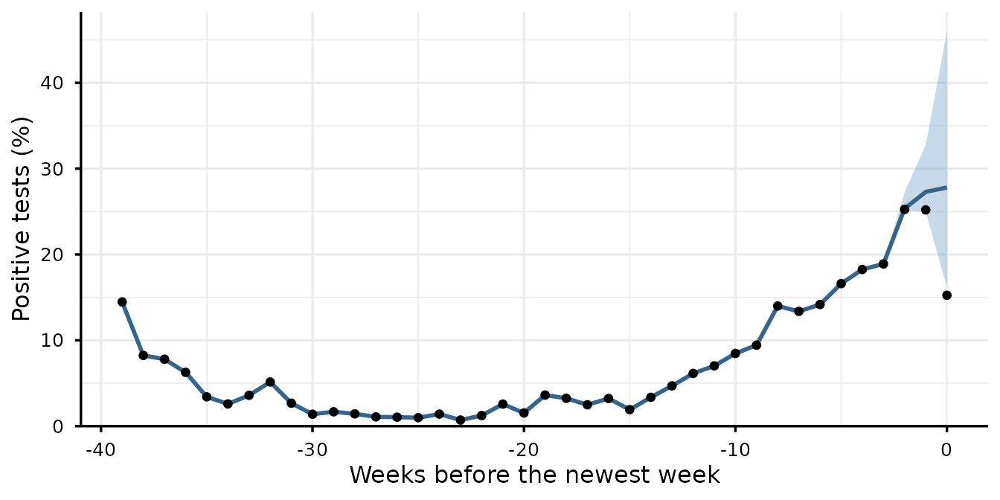

Case study, part 2: the methods are in packages
Richard Aubrey White
Source:vignettes/articles/case-study-methods.Rmd
case-study-methods.RmdThe surveillance methods are in R packages, separate from the pipeline. The packages read tables that follow the data contract of part 1. This article runs one methods package, csalert, on one indicator.
A method in a package has a version, tests and documentation.
The data
This article first runs the code of part 1 that makes the synthetic registries and their tables. It does not print that code again. It then takes the national influenza indicator of the laboratory:
library(csalert)
d <- check_contract(get_data_lab(), "lab")[indicator_tag == "lab_influenza"]
d[, .(reporting_dates = .N, positives = sum(numerator), tests = sum(denominator)), keyby = .(isoyearweek_reference)] |> tail(4)
#> Key: <isoyearweek_reference>
#> isoyearweek_reference reporting_dates positives tests
#> <char> <int> <int> <int>
#> 1: 2023-52 23 89 471
#> 2: 2024-01 20 133 521
#> 3: 2024-02 14 134 483
#> 4: 2024-03 7 73 265The newest weeks have fewer reporting dates, because some of their results are not reported yet. Their counts are too low. A trend fitted to them would fall for that reason alone.
The methods in sequence
The nowcast in step 2 makes a set of simulated draws. Each later step takes the draws and adds measures to them, so the uncertainty of each step carries into the next:
-
csfmt_reporting_triangle_v3()converts the contract table to a reporting triangle. -
nowcast_delay_ecdf_v1()nowcasts the recent weeks, from the reporting delays of weeks whose counts are complete. It nowcasts the numerator and the denominator in the same draws. -
ens_add_rate()divides the numerator by the denominator in each draw: the percentage of tests that are positive. -
short_term_trend()fits the slope of the last 6 weeks of the nowcast rate in each draw. -
mem_thresholds_v1()puts each week in one of five intensity levels, from thresholds fitted on the earlier seasons by the Moving Epidemic Method. -
ens_collapse()reduces the draws to quantiles and probabilities.
tri <- csfmt_reporting_triangle_v3(d, id_cols = c("indicator_tag", "location_code", "age", "sex"))
set.seed(2)
ens <- nowcast_delay_ecdf_v1(tri, max_delay_days = 28, n_sim = 500, denominator_col = "denominator")
ens <- ens_add_rate(ens, numerator = "numerator_nowcasted", denominator = "denominator_nowcasted", per = 100)
rate <- csfmt_var("numerator_nowcasted", denom = "denominator_nowcasted", per = 100)
ens <- short_term_trend(ens, measure = rate, trend_isoyearweeks = 6, denominator = "denominator_nowcasted", per = 100)
ens <- mem_thresholds_v1(ens, measure = rate)
#> mem_thresholds_v1: 3 season(s) fit on < 5 training seasons (provisional); see mem_n_seasons.
res <- ens_collapse(ens, probs = c(0.05, 0.5, 0.95), heal = TRUE)mem_thresholds_v1() prints a message for the seasons
with fewer than 5 earlier seasons to fit their thresholds on. It needs
at least 2, so the first two seasons of this series get no intensity
level.
The result
The result has one row for each week. csfmt_var() builds
each column name from its parts. The code below uses it to select the
columns:
gr <- csfmt_var(rate, role = "trend", suffix = "_gr")
tail(res[, .(
isoyearweek,
positive_pct = get(csfmt_var(rate, q = 0.5)),
positive_pct_p05 = get(csfmt_var(rate, q = 0.05)),
positive_pct_p95 = get(csfmt_var(rate, q = 0.95)),
growth_pct = get(csfmt_var(gr, q = 0.5)),
p_increasing = get(csfmt_var(rate, role = "trend", suffix = "_increasing_pr")),
p_high_or_veryhigh = get(csfmt_var(rate, role = "status", level = "high")) + get(csfmt_var(rate, role = "status", level = "veryhigh"))
)], 5)
#> isoyearweek positive_pct positive_pct_p05 positive_pct_p95 growth_pct
#> <char> <num> <num> <num> <num>
#> 1: 2023-51 18.25397 18.25397 18.25397 8.179309
#> 2: 2023-52 18.89597 18.89597 18.89597 6.218434
#> 3: 2024-01 25.34396 25.10032 27.25937 8.615023
#> 4: 2024-02 27.29312 24.95438 32.78171 10.073519
#> 5: 2024-03 27.79855 16.16256 45.96072 9.090622
#> p_increasing p_high_or_veryhigh
#> <num> <num>
#> 1: 0.990 0.000
#> 2: 0.982 0.000
#> 3: 0.994 0.000
#> 4: 1.000 0.250
#> 5: 0.960 0.434The growth rate is the slope as a percentage of the current level,
per week. p_increasing is the share of draws with a
positive slope.
library(ggplot2)
pd <- tail(res, 40)
pd[, week := seq_len(.N) - .N]
q <- ggplot(pd, aes(x = week))
q <- q + geom_ribbon(aes(ymin = get(csfmt_var(rate, q = 0.05)), ymax = get(csfmt_var(rate, q = 0.95))), fill = "steelblue", alpha = 0.3)
q <- q + geom_line(aes(y = get(csfmt_var(rate, q = 0.5))), colour = "steelblue4", linewidth = 1)
q <- q + geom_point(aes(y = 100 * original / pd[[csfmt_var("denominator_nowcasted", q = 0.5)]]), size = 1.5)
q <- q + scale_x_continuous("Weeks before the newest week")
q <- q + scale_y_continuous("Positive tests (%)", expand = expansion(mult = c(0, 0.05)))
q <- q + expand_limits(y = 0)
q <- q + theme_minimal(base_size = 12)
q <- q + theme(axis.line = element_line(colour = "black", linewidth = 0.6), axis.ticks = element_line(colour = "black", linewidth = 0.6), axis.text = element_text(colour = "black"))
q
The points are the positive tests reported so far, divided by the nowcast number of tests. The line and the band are the median and the 90% interval of the nowcast percentage. In the weeks whose counts are complete, the points and the line agree. In the newest weeks the points fall, because some positive tests are not reported yet. The nowcast percentage does not fall.
The same chain for every indicator
The hospital indicator has no denominator. The other functions run on
its counts without ens_add_rate(), and the measure is
numerator_nowcasted. The general practice indicator has no
reporting delay. nowcast_passthrough_to_ensemble_v1()
replaces nowcast_delay_ecdf_v1(), and every later step is
the same.
Part 3 reads from the data whether each indicator has a denominator and a reporting delay. It then runs the methods on every indicator.
csalert also reruns each nowcast method on past weeks whose counts are now complete, and scores the result. A csalert vignette runs every step, including this validation.